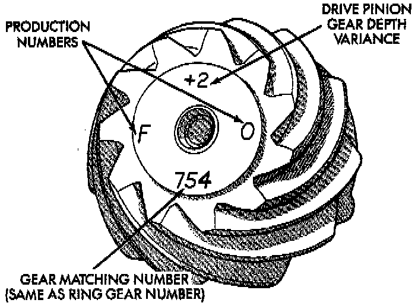
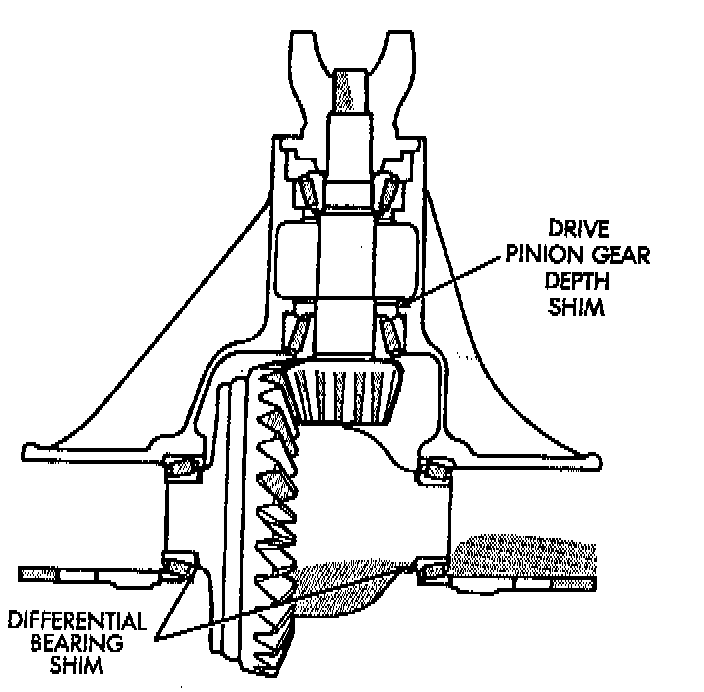
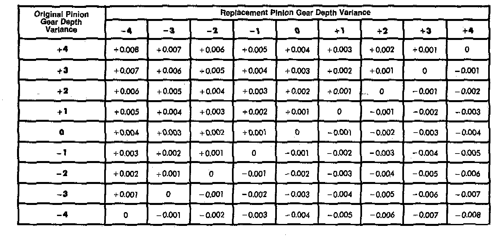

Pinion Gear Depth General Information

Ring and pinion gears are supplied as matched sets only. The identifying numbers for the ring and pinion gear are etched into the face of each gear. A plus (+) number, minus (-) number or zero (0) is etched into the face of the pinion gear. This number is the amount (in thousandths of an inch) the depth varies from the standard depth setting of a pinion etched with a (0). The standard setting from the center line of the ring gear to the back face of the pinion is 92.08 mm (3.625 inch). The standard depth provides the best gear tooth contact pattern. Refer to Backlash and Contact Pattern Analysis paragraph in this section for additional information.

Compensation for pinion depth variance is achieved with select shims. The shims are placed behind the rear pinion bearing cup.

If a new gear set is being installed, note the depth variance etched into both the original and replacement pinion gear. Add or subtract the thickness of the original depth shims to compensate for the difference in the depth variances. Refer to the Depth Variance chart illustrated.
Note where Old and New Pinion Marking columns intersect. Intersecting figure represents plus or minus the amount needed.
Note the etched number on the face of the drive pinion gear (-1, -2, 0, +1, +2, etc.). The numbers represent thousands of an inch deviation from the standard. If the number is negative, add that value to the required thickness of the depth shims. If the number is positive, subtract that value from the thickness of the depth shim. If the number is 0 no change is necessary.